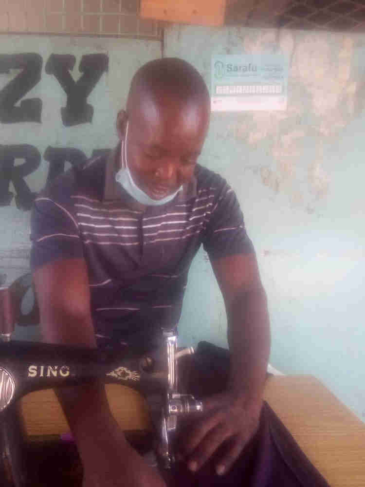
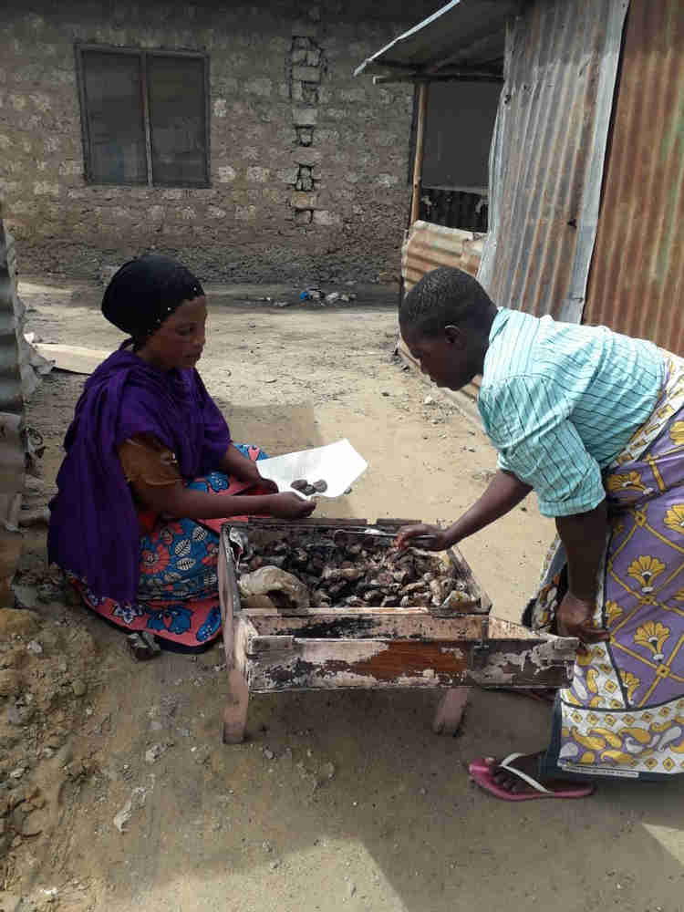

Red Cross brings Community Currency to Kisauni
Below are a compilation of Community Inclusion Currency (CIC) user stories from Grassroots Economics Field Support Engineers (Emmanuel Mbui, Amina Godana, Janet Akinyi and Joyce Kamau) supporting and working with Red Cross volunteers and community groups. Implementation with Red Cross volunteers led by Bahero Mohamed through door to door awareness raising and street theater began in January 2021. The following case studies are taken from the week of April 23rd 2021 and their successes continue to ripple out across the region. While Kisauni is only a small part of Kenya; through word-of-mouth over 50,000 households and small businesses in vulnerable areas have registered to be part of the Sarafu Network since 2020 and have traded roughly 3 Million USD of goods and services among each other using a blockchain ledger - on simple phones without the need for internet.
Below are a compilation of Community Inclusion Currency (CIC) user stories from Grassroots Economics Field Support Engineers (Emmanuel Mbui, Amina Godana, Janet Akinyi and Joyce Kamau) supporting and working with Red Cross volunteers and community groups. Implementation with Red Cross volunteers led by Bahero Mohamed through door to door awareness raising and street theater began in January 2021. The following case studies are taken from the week of April 23rd 2021 and their successes continue to ripple out across the region. While Kisauni is only a small part of Kenya; through word-of-mouth over 50,000 households and small businesses in vulnerable areas have registered to be part of the Sarafu Network since 2020 and have traded roughly 3 Million USD of goods and services among each other using a blockchain ledger - on simple phones without the need for internet.
Below are a compilation of Community Inclusion Currency (CIC) user stories from Grassroots Economics Field Support Engineers (Emmanuel Mbui, Amina Godana, Janet Akinyi and Joyce Kamau) supporting and working with Red Cross volunteers and community groups. Implementation with Red Cross volunteers led by Bahero Mohamed through door to door awareness raising and street theater began in January 2021. The following case studies are taken from the week of April 23rd 2021 and their successes continue to ripple out across the region. While Kisauni is only a small part of Kenya; through word-of-mouth over 50,000 households and small businesses in vulnerable areas have registered to be part of the Sarafu Network since 2020 and have traded roughly 3 Million USD of goods and services among each other using a blockchain ledger - on simple phones without the need for internet.
Below are a compilation of Community Inclusion Currency (CIC) user stories from Grassroots Economics Field Support Engineers (Emmanuel Mbui, Amina Godana, Janet Akinyi and Joyce Kamau) supporting and working with Red Cross volunteers and community groups. Implementation with Red Cross volunteers led by Bahero Mohamed through door to door awareness raising and street theater began in January 2021. The following case studies are taken from the week of April 23rd 2021 and their successes continue to ripple out across the region. While Kisauni is only a small part of Kenya; through word-of-mouth over 50,000 households and small businesses in vulnerable areas have registered to be part of the Sarafu Network since 2020 and have traded roughly 3 Million USD of goods and services among each other using a blockchain ledger - on simple phones without the need for internet.
Below are a compilation of Community Inclusion Currency (CIC) user stories from Grassroots Economics Field Support Engineers (Emmanuel Mbui, Amina Godana, Janet Akinyi and Joyce Kamau) supporting and working with Red Cross volunteers and community groups. Implementation with Red Cross volunteers led by Bahero Mohamed through door to door awareness raising and street theater began in January 2021. The following case studies are taken from the week of April 23rd 2021 and their successes continue to ripple out across the region. While Kisauni is only a small part of Kenya; through word-of-mouth over 50,000 households and small businesses in vulnerable areas have registered to be part of the Sarafu Network since 2020 and have traded roughly 3 Million USD of goods and services among each other using a blockchain ledger - on simple phones without the need for internet.
By Emmanuel Mbui
Economic imbalance, insecurity, dependency and luck of money are the challenges experienced by most people in Kisauni. Thanks to Red Cross, partnering with Grassroots economics foundation for introducing CICs, Community Inclusion Currency (locally Sarafu or 'currency' in Kisawhili); a medium of exchange that builds trust and unites members of a community. Sarafu helps people pool the locally available resources and provides a fair space for exchange within the community.
In Kenya, Mombasa County, Kisauni sub county, in Manyani village, we find Jackton Mwema (pictured above), a tailor in his community. Jackton spends most of his time mending other people clothes. By doing this, he is able to support his family from the little cash he gets. Like any other member in his community, Jackton is not an exception to economic trauma which is why he joined the Sarafu network. He is now linked to other members of Sarafu within the community who have other goods or services (Fresh water, vegetables, shops) to offer to one another.
Jackton at his place of work in Manyani village accepts payment in sarafu for the service that he provides, which he latter spends it to buy other goods and services from other members in the community.
Jackton is not the only one who benefits from Sarafu, in the same village of Manyani, we meet another beneficiary. Victoria Kylo. The owner of a small Duka (shop) in the village, she joined the network and accepts a small percentage of the payment in Sarafu. Victoria is in the same trading circle with Jackton and other members. Victoria uses her Sarafu to buy mboga(vegetables) and services like repairing her clothes from Jackton and to buy cold water from their neighbor.
The two have also manage to invite other people in by explaining how Sarafu works, giving a testimonial example through themselves. Now their trading group has four active members.
Due to Covid 19 Pandemic and its effects on the economy at large, most of the people have not been able to cater for their basic needs. The ones greatly affected being the vulnerable in the community. A ray of hope was brought upon these communities with the introduction of Community Inclusion Currencies which helps them get their basic needs and has also helped them in minimizing debt collection which was a great challenge to them. Here are some testimonials from different users in different locations.
By Amina Godana
Mshomoroni Area in Mjambere Ward: Its an area where the local economy is not that sustainable this is because most of the young and able youths have engaged themselves in illegal activities such as theft and high level of insecurity in the area. This is due to financial trauma. This has however begun to change with the introduction of community inclusion currencies since anyone can accept and use Sarafu even when they do not have a business. He/she can offer services in the community and be paid with CIC and later spend on other business.
Here are some testimonials of users who have benefited with the usage of sarafu in the area.
